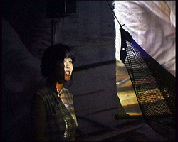

socio-cultural, socio-aesthetic, nation, boundary, deportation, geography, perspective, re-frame, re-interpret, collaborate What If I'm Not Real is a multi-screen installation work in which the broad ranges of cultural backgrounds and disciplines of artists were able to engage with their shared global contexts for migrations and deportations without the assumption of consensus of perspective. The resulting visual and physical narrative is able to allow different musical performance artists to each reframe the way the work is perceived, so cutting across cultural divides re-locating the same visuals within different geographies and perspectives. The work questions techno-insularity and proposes greater roles for continuing live evolution of electronic screen-based arts, and for the confounding of the real-symbolic between visuals and music.
Abstract The multi-screen installation by Virtual Migrants entitled “What If I’m Not Real” articulates the politics which underpin asylum and refuge through the bringing together of a diverse range of socio-cultural experience in order to form a human linkage and identification with the material, also crossing many artistic disciplines, to create a meta-narrative which speaks for the whole group. The artists collaboratively involved in its creation, while being drawn by virtue of shared interest in the theme, are from India, China, Zambia, Pakistan, England and Iran, together contributing respective artforms of embroidery, photography, drama, textiles, video, dance and movement, music, poetry, and creative software. The artists, collaborating together for the first time, undertook a two-year developmental incubation period during which a range of focused exchanges, presentations and discussions were made in a close-knit manner, giving each artist their space to articulate their background, perspective and approach, and also discussing other artistic, creative, documentary and polemical contributions to the theme. This wholly transvergent process involved playing with ideas from the literal to the symbolic and the abstract, and also with the honest expression of conflicting views, before the various threads were able to converge using electronic moving image technology into a final product. However, not happy with ending the transvergent process there, the aesthetic of the work was developed to enable further and continual artistic response and contribution to the work, and a degree of continuing re-manipulation of the work by the viewer/audience using an interactive digital interface. The ways in which the digital and electronic methods can integrate the diversity of expression, culture and form is unparalleled, yet it was chiefly an aesthetic involving an open-ended, culturally neutral, visual and physical narrative which enabled artists to continue to contribute. Hence, the installation has been presented over the last few years accompanied by live musicians which have added a soundtrack and/or words which create a sister narrative to that on the screens, each one able to modify the original meaning through a change of emphasis and cultural resonance. Examples of performances include Chinese opera, Indian tabla and vocal, African drums, Kurdish santoor and poetry, English folk, free-jazz vibraphone, and Afro-jazz vocal. Each time the work is presented creates a new reading in support of the core narrative, and a part of what constitutes the reading is not only the literal inflection, composition, arrangement, words and so on that comprise the expressed meaning, but also the re-location and shift in geographies and cultural perspective which accompanies the performance by the authenticity of the musicians’ perceived origins. This theoretical underpinning of the project may seem difficult to make given the cultural, aesthetic and social complexities, yet the strength of the witnessed product indeed bears out the proposal. The social processes of collaboration in the production and the re-interpretation in presentation are critical to allow fluidity and transvergence to continue throughout the life of the work, and a further layer to this method was added by creating an interactive version of the piece which allows the soundtrack to be changed and re-mixed in real time while the three screens play the visuals, so that the viewer themselves can become a part of the re-interpretation process. The project encompasses an ultimate range of social interaction with a central meaning, with the stage of presentation and exhibition allowing performance and sound to alter the way the visual is read. What the work and its process inherently shows is the way the narrative holds for such a range of national origins, the way a global and imperialist imperative creates many versions of the same story, and so the methodology not only becomes a transvergent approach for the sake of dialogue but also it is integral to the artistic statement itself. URLS:
virtual migrants website web page for the "What If I'm Not Real" installation artist Kooj Chuhan's website |